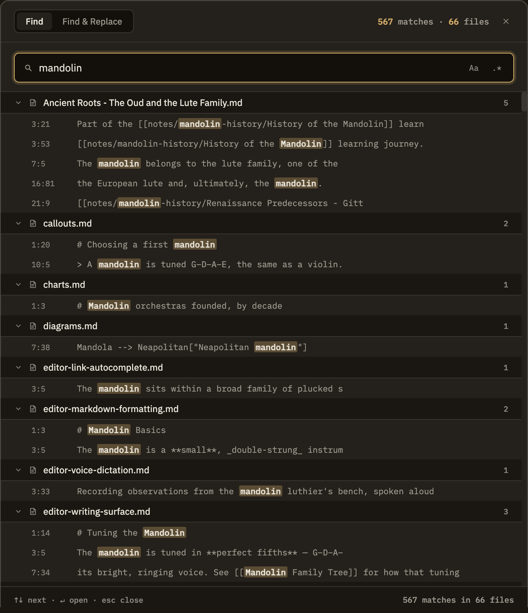

Docs/Navigation/Search
Search
Press ⌘⇧F (or Ctrl⇧F) to open Find in Notes — a search across the text of every note in your project, not just their titles. Results update as you type, and clicking any match opens the note with your cursor already on that line, ready to edit.
Opening it
The search window has two modes: Find and Find and Replace. You can switch between them at any time with the toggle at the top. There are three ways in:
⌘F (without Shift) searches only within the note you're currently reading. The full ⌘⇧F search covers your whole project. If you're only finding matches in the note you already have open, you pressed the wrong one.
What gets searched
Search looks through the actual text of your notes, line by line. If you can read it in a note, search can find it — including things like tags or links, which match simply because their text is there.

Reading results and jumping in
Results are grouped by note. Each group can be collapsed to tidy away a note with many matches. Click any result to open that note with your cursor placed right on the match — you can start typing immediately.
Search as you type
Results update automatically as you type — there's no button to press or Enter key to hit. Turning match case or pattern matching on or off refreshes the results the same way. A running count of matches sits at the top.
Find and Replace
In Replace mode you add the replacement text, and each result gets a checkbox so you can pick which matches to change. Replace Selected changes only the checked ones; Replace All changes every match. Each result previews how the line will read afterward.
Search vs. Quick switch vs. the command palette
Three tools that each answer a different question: